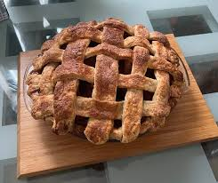

Home
Apple Pie

Description
Apple pie is a double-crusted pastry dessert featuring a sweet,
spiced apple filling with a flaky, buttery crust.
It's a classic, iconic American dessert often associated with fall and holidays,
typically served warm with vanilla ice cream (à la mode), whipped cream,
or cheddar cheese. The filling is made from fresh apples, sugars,
and spices like cinnamon, and the pastry can be solid or latticed.
Ingredients
- 1 (9-inch) deep dish pie crust
- 4 large tomatoes, peeled and sliced
- ½ pound bacon - cooked, drained, and chopped
- 3 green onions, thinly sliced
- ½ cup chopped fresh basil
- 1 teaspoon dried oregano
- ½ teaspoon garlic powder
- ½ teaspoon crushed red pepper
- 2 cups shredded Cheddar cheese
- ¼ cup mayonnaise
Steps
- Gather all ingredients. Preheat the oven to 375 degrees F.
- In alternating layers, fill pie crust with tomatoes, bacon,
green onions, basil, oregano, garlic powder, and red pepper.
- Stir together cheese and mayonnaise in a small bowl.
- Spread over the top of pie. Cover loosely with aluminum foil.
- Bake in the preheated oven for 30 minutes. Remove foil and continue baking for 30 more minutes.
- Serve pie warm or cold.